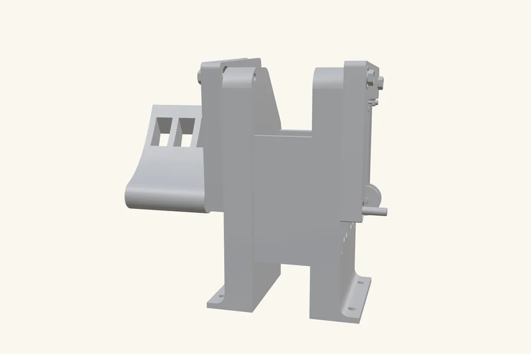
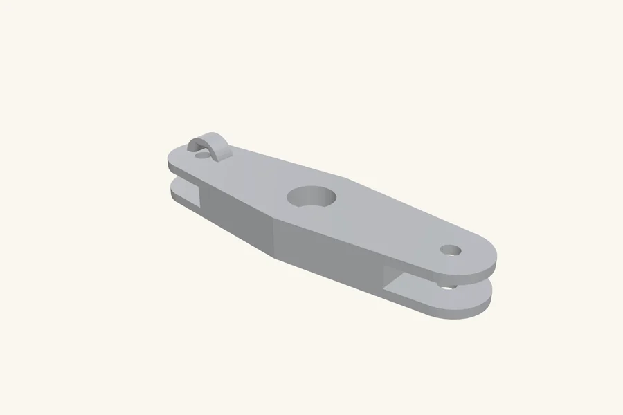

Rudder pedals that feel like the jet
I fly ultralights, and consumer sim pedals never felt right: short throw, toy-like centering, and potentiometers that get jittery with wear. So I built my own. F-15 style geometry, three axes, magnetic sensing that cannot wear out, and firmware any PC recognises without drivers.
| Role | Design, print, wiring and firmware, solo | Type | Personal project |
|---|---|---|---|
| Tools | SolidWorks . FDM 3D printing . Teensy 2.0 . A1301 Hall-effect sensors . C++ | Timeline | 2026 |
| Result | 3-axis plug-and-play USB HID controller | Status | In daily use at my sim |
The problem
Rudder pedals do three jobs at once: yaw through the sliding pedal motion, plus independent left and right toe brakes. Consumer hardware compresses all of that into short springy travel measured by potentiometers, and a potentiometer is a wiper physically dragging on a resistive track. That wiper is friction you feel through your feet, it wears into dead spots exactly where you use it most, and the wear is invisible until it shows up as jitter.

Constraints
- Three independent axes (yaw plus left and right toe brakes) in one mechanism
- Every structural part printable on a hobby FDM printer
- No contact-based sensing anywhere in the signal path
- Plug-and-play: a standard game controller to any PC, no drivers, no companion app
Sensing without touching
Each axis is measured by an A1301 Hall-effect sensor reading a magnet on the moving part. The only thing that crosses the gap is a magnetic field: no wiper, no contact, nothing to wear. The output is smooth, continuous, and identical on day one and day one thousand. That single component choice deletes the entire failure mode that ruins potentiometer controls.


Mechanism first, firmware that gets out of the way
I designed the three-axis assembly around F-15 style pedal geometry and printed it, iterating on pivot placement and return feel. Rapid prototyping earns its name here: pedal feel is subjective, and the fastest way to evaluate a linkage is to stand on it.
A Teensy 2.0 reads the sensors and presents itself as a standard USB HID game controller; plug it in and every simulator sees it instantly. The C++ firmware handles per-axis calibration, learning each axis's real min, centre and max, plus configurable deadzone logic so a resting foot never commands a tiny continuous input.
The result
What I learned
This is where mechanical design and embedded software stopped being separate skills for me. The feel comes from the linkage, the precision from the sensor choice, the usability from the firmware, and no one of those can compensate for getting another wrong. It also connects to flying: a control input has to feel right, not only measure right, and friction in a sensor is a lie about where the pilot actually put their foot.